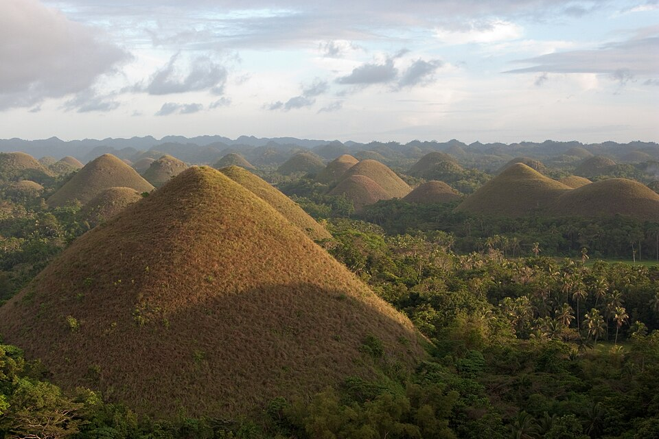

Chocolate Hills, Bohol

The Chocolate Hills are one of the most unique and iconic geological formations in the world, located in the heart of Bohol province in the Philippines. Spanning an area of more to 50 square kilometers across the towns of Carmen, Batuan, and Sagbayan, this surreal landscape consists of an estimated 1,200 to over 1,700 nearly symmetrical, cone-shaped mounds.